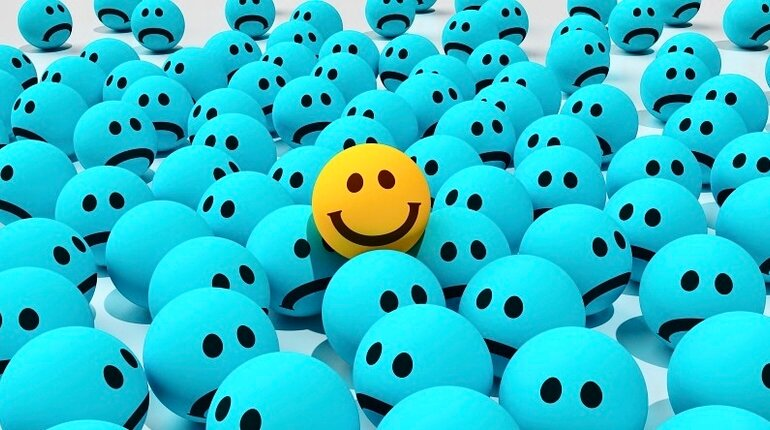

Дизайнер емоцій повинен буде передбачити, як споживач сприйме той чи інший товар або контент сайту. Його завдання — знаходити методи впливу на споживачів через конкретні органи відчуття та виводити їх на певні емоції та дії. Щоб зрозуміти, в чому полягає основна професійна задача дизайнера емоцій, потрібно згадати про те, що ми називаємо емоціями.
Емоція - це процес переживання якого-небудь почуття (радості, смутку, задоволення), за допомогою емоцій ми більш глибоко сприймаємо навколишній світ.
У процесі спілкування кожен з нас відчуває різні емоції, і саме емоційне сприйняття дозволяє нам сформувати свою думку про ту чи іншу людину. Таким чином, професія, пов'язана з емоціями, стає необхідною.
Дизайнер емоцій - фахівець, який розробляє і створює емоційний фон контенту таким чином, щоб у користувача під час споживання контенту виникали конкретні відчуття і емоції. У своїй роботі дизайнер емоцій може використовувати нові канали доставки інформації, високі технології. Такий фахівець повинен не тільки добре розбиратися в психології, фізіології та анатомії людини, а й володіти яскраво вираженим творчим началом.
На мій погляд, сфера застосування професійних навичок у дизайнера емоцій досить обширна, адже дана спеціальність тільки зароджується і згідно з даними «Атласу професій» з'явиться повсюдно тільки після 2020 року. Працювати дизайнер емоцій може як в творчих організаціях, так і самостійно, наприклад, розробляючи контент для сайту. Крім цього, дизайнер емоцій може бути затребуваний в кінематографі, консультуючи режисера або сценаристів з питань, пов'язаних з постановкою емоційно яскравих сцен.
З базового курсу з суспільствознавства можна сформувати уявлення про те, що ми зараз живемо в період постіндустріального (інформаційного) суспільства, де в пріоритеті виявляється сфера послуг. Ті завдання, які раніше міг виконати тільки людина, потихеньку «передаються» машинам, в цих умовах професія дизайнера емоцій залишатиметься затребуваною на ринку праці довгий час.  Ще однією причиною, чому дана професія буде затребувана, полягає в тому, що, відчуваючи певні емоції, людина краще «запам'ятовує» і «відчуває» цей світ.
Повернутися на головну сторінку
Автор: Фещенко Аніта